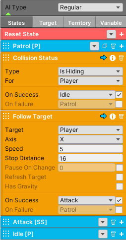

Hide
When implementing a stealth mechanic, it’s often useful to allow the player to hide behind objects like foliage. To achieve this, give each object that is meant to hide the player a Collider2D component that is set to IsTrigger mode. For convenience, the Hide layer will be available, so make sure to set the layer of the hide object to Hide.
When the player enters the trigger/hide zone, the hide state and hide flag will be set to true. If any AI exist, they can read the hide flag and adjust their behavior accordingly. While in the hide state, the player can move to other hide zones without having to repress the enter button if the exit method is set to ButtonToggle.
Important
The player can’t take damage in a hide zone.
{kind=link}
Important
When the player moves outside a hide zone, the hide flag will be set false, even if the player has not properly exited the hide state. The player will be able to take damage again.
Property |
|
|---|---|
Hide Button |
Press this button to hide the player in a hide zone. |
Target Layer |
The layer, typically Hide, that each hide object must have if it’s a hide zone. |
Exit |
If Automatic is set, the player will automatically exit the hide state once they are no longer in a hide zone. If Button Toggle is set, the player will exit the hide state by toggling the hide button. If Both is set, both exit methods will work concurrently. |
Player Hide Sorting |
The sorting layer the player will be set to when hiding. |
Player Hide Order |
The order in layer the player will be set to when hiding. |
Event |
|
|---|---|
On Hide |
The Unity Event invoked when the player first enters the hide state. |
On Unhide |
The Unity Event invoked when the player exits the hide state. |
The example below shows how the AI can read the player’s hide flag. To achieve this, you need to use the Collision Status node and set its type to IsHiding. In this example if the player is hiding, the AI will move to the Idle state. If the player is not hiding, the AI will follow the player.
It’s important to note that the Idle state also contains a Collision Status node that reads the player’s hide flag. This allows the AI to return to the patrol state when the player is no longer hiding.
